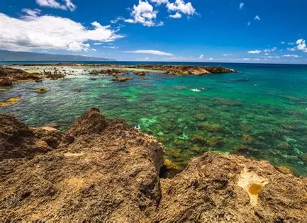

Stop 4: Shark's Cove
Shark's Cove is known for its rocks and clear water. I think it would be an interesting place to visit because it looks different from other beaches. I would like to take pictures and see the natural scenery. Visitors should be careful around the rocks and check the ocean conditions.
